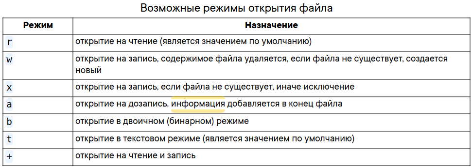

Вызов методов цепочкой
Ссылка: Вызов методов цепочкойЧасто с данными надо выполнить несколько операций, пример скрипта:
line = "switchport trunk allowed vlan 10,20,30"
words = line.split()
vlans_str = words[-1]
vlans = vlans_str.split(",")
print(vlans)
В этом случае переменные используются для хранения промежуточного результата и последующие методы/действия выполняются уже с
переменной. Это совершенно нормальный вариант кода, особенно поначалу, когда тяжело воспринимать более сложные выражения.
Однако в Python часто встречаются выражения, в которых действия или методы применяются один за другим в одном выражении. Например, предыдущий код можно записать так:
line = "switchport trunk allowed vlan 10,20,30"
vlans = line.split()[-1].split(",")
print(vlans)
Так как тут нет выражений в скобках, которые бы указывали приоритет выполнения, все выполняется слева направо. Сначала
выполняется line.split() - получаем список, затем к полученному списку применяется [-1] - получаем последний элемент списка,
строку 10,20,30. К этой строке применяется метод split(",") и в итоге получаем список ['10', '20', '30'].
Главный нюанс при написании таких цепочек предыдущий метод/действие должен возвращать то, что ждет следующий метод/дествие. И обязательно чтобы что-то возвращалось, иначе будет ошибка.
===============================================================================================================
Модуль re
Функции этого модуля:
- re.match(pattern, stroka)
Ищет совпадает ли шаблон (pattern) с началом нашей строки. - re.fullmatch(pattern, string)
Проверить, подходит ли строка string под шаблон pattern>>> match = re.fullmatch(r'\d\d\D\d\d', r'12-12') >>> print('YES' if match else 'NO') YES >>> match = re.fullmatch(r'\d\d\D\d\d', r'Т. 12-12') >>> print('YES' if match else 'NO') NO - re.split(pattern, string, maxsplit=0)
Этот метод разделяет строку по заданному шаблону.result = re.split(r'y', 'Analytics') print result Результат: ['Anal', 'tics']
В примере мы разделили слово «Analytics» по букве «y». Метод split() принимает также аргумент maxsplit со значением по умолчанию, равным 0. В данном случае он разделит строку столько раз, сколько возможно, но если указать этот аргумент, то разделение будет произведено не более указанного количества раз. Давайте посмотрим на примеры Python RegEx:result = re.split(r'i', 'Analytics Vidhya') print result Результат: ['Analyt', 'cs V', 'dhya'] # все возможные участки.
result = re.split(r'i', 'Analytics Vidhya',maxsplit=1) print result Результат: ['Analyt', 'cs Vidhya']
Мы установили параметр maxsplit равным 1, и в результате строка была разделена на две части вместо трех.Если в шаблоне нет группирующих скобок, то re.split работает очень похожим образом на str.split. А вот если группирующие скобки в шаблоне есть, то между каждыми разрезанными строками будут все соответствия каждой из подгрупп.
import re print(re.split(r'(\s*)([+*/-])(\s*)', r'12 + 13*15 - 6')) # -> ['12', ' ', '+', ' ', '13', '', '*', '', '15', ' ', '-', ' ', '6']
В некоторых ситуация эта возможность бывает чрезвычайно удобна! Например, достаточно из предыдущего примера убрать лишние группы, и польза сразу станет очевидна!import re print(re.split(r'\s*([+*/-])\s*', r'12 + 13*15 - 6')) # -> ['12', '+', '13', '*', '15', '-', '6']
- re.search(pattern, string)
Найти в строке string первую строчку, подходящую под шаблон pattern
Примеры:>>> import re >>> match = re.search(r'\d\d\D\d\d', r'Телефон 123-12-12') >>> print(match[0] if match else 'Not found') 23-12 >>> match = re.search(r'\d\d\D\d\d', r'Телефон 1231212') >>> print(match[0] if match else 'Not found') Not found
- re.findall(pattern, string)
Найти в строке string все непересекающиеся шаблоны pattern>>> print(re.findall(r'\d\d\.\d\d\.\d{4}', r'Эта строка написана 19.01.2018, а могла бы и 01.09.2017')) ['19.01.2018', '01.09.2017']Если в шаблоне есть группирующие скобки, то вместо списка найденных подстрок будет возвращён список кортежей, в каждом из которых только соответствие каждой группе. Это не всегда происходит по плану, поэтому обычно нужно использовать негруппирующие скобки (?:...).
import re print(re.findall(r'([a-z]+)(\d*)', r'foo3, im12, go, 24buz42')) # -> [('foo', '3'), ('im', '12'), ('go', ''), ('buz', '42')] - re.finditer(pattern, string)
Итератор по всем непересекающимся шаблонам pattern в строке string (выдаются match-объекты)for m in re.finditer(r'\d\d\.\d\d\.\d{4}', r'Эта строка написана 19.01.2018, а могла бы и 01.09.2017'): print('Дата', m[0], 'начинается с позиции', m.start()) # -> Дата 19.01.2018 начинается с позиции 20 # -> Дата 01.09.2017 начинается с позиции 45 - re.sub(pattern, replace, string, count=0, flags=0)
заменяет символы по заданному паттерну на заданные символы и возвращает исправленную строку.
Параметры:pattern - регулярное выражение
replace - на что нужно заменить pattern
string - строка, к которой нужно применить регулярное выражение
count - необязательный аргумент, максимальное число вхождений, подлежащих замене. Если этот параметр опущен или равен нулю, то произойдет замена всех вхождений.
flags - флаги
Возвращаемое значение:Если совпадения есть - изменённая строка
string, если совпадений нетprint(re.sub(r'\d\d\.\d\d\.\d{4}', r'DD.MM.YYYY', r'Эта строка написана 19.01.2018, а могла бы и 01.09.2017')) # -> Эта строка написана DD.MM.YYYY, а могла бы и DD.MM.YYYY - stroka.re.group()
Искомая подстрока найдена. Чтобы вывести её содержимое, применим метод group() (мы используем «r» перед строкой шаблона, чтобы показать, что это «сырая» строка в Python):result = re.match(r'AV', 'AV Analytics Vidhya AV') print result.group(0) Результат: AV
- re.compile(pattern, repl, string)
Мы можем собрать регулярное выражение в отдельный объект, который может быть использован для поиска. Это также избавляет от переписывания одного и того же выражения.pattern = re.compile('AV') result = pattern.findall('AV Analytics Vidhya AV') print result result2 = pattern.findall('AV is largest analytics community of India') print result2 Результат: ['AV', 'AV'] ['AV']
Также есть методы start() и end() для того, чтобы узнать начальную и конечную позицию найденной строки.
result = re.match(r'AV', 'AV Analytics Vidhya AV') print result.start() print result.end() Результат: 0 2
Регулярные выражения
Ссылка: Регулярные выражения в Python от простого к сложному.Python RegEx: практическое применение регулярок
Регулярные выражения
Регулярное выражение — это строка, задающая шаблон поиска подстрок в тексте. Одному шаблону может соответствовать много разных строчек. Термин «Регулярные выражения» является переводом английского словосочетания «Regular expressions». Перевод не очень точно отражает смысл, правильнее было бы «шаблонные выражения».
Регулярные выражения это, по существу, крошечный язык программирования, встроенный в Python и доступный при помощи модуля re. Используя его, вы указывается правила для множества возможных строк, которые вы хотите проверить; это множество может содержать английские фразы, или адреса электронной почты, или TeX команды, или все что угодно.
Метасимволы
Это набор символов:. ^ $ * + ? { [ ] \ | ( )
1. Квадратные скобки: [ и ]
Первые метасимволы, что мы рассмотрим это [ и ]. Они используются для определения множества символов (классов), с которыми вы ищите совпадение. Символы могут быть перечислены по отдельности, или в виде некоторого диапазона символов, обозначенного первым и последним символом, разделенных знаком '-'. Например, [abc] будет соответствовать любому из символов a, b или c; это то же самое, что выражение [a-c], использующее диапазон для задания того же множества символов. Если вы хотите сопоставить только строчные буквы, РВ будет иметь вид [a-z].
Метасимволы не активны внутри классов. Например, [akm$] будет соответствовать любому из символов 'a', 'k', 'm' или '$'. Знак '$' это обычно метасимвол (как видно из списка символов выше), но внутри класса символов он лишается своей особой природы.
внутри скобок нужно экранировать только ] и \
Для того, чтобы находить соответствие символам вне этого класса, в начале класса добавляется символ '^'. Например, выражение [^5] соответствует любому символу, кроме '5'.
2. Обратная косая черта: \
Пожалуй, наиболее важным является метасимвол обратной косой черты \.
Как и в строковых литералах Python, за бэкслешем могут следовать различные символы, обозначающие разные специальные последовательности.
Он также используется для экранирования метасимволов, чтобы их можно было использовать в шаблонах; например, если нужно найти соответствие [ или \, для того чтобы лишить их своей особой роли метасимволов, перед ним нужно поставить обратную косую черту: \[ или \\.
Для того, чтобы не было таких нагромождений слешей, перед открывающей кавычкой нужно поставить символ r, что скажет питону «не рассматривай \ как экранирующий символ (кроме случаев экранирования открывающей кавычки)». Соответственно можно будет писать r'\\par'
Некоторые из специальных последовательностей, начинающихся с '\' представляют предопределенные наборы символов, часто бывающие полезными, такие как набор цифр, набор букв, или множества всего, что не является пробелами, символами табуляции и т. д. (whitespace). Полный список последовательностей и расширенных определений классов для Юникод-строк смотрите в последней части Regular Expression Syntax.
| \d | любая цифра; эквивалент класса [0-9] | СУ\d\d → СУ35, СУ111, АЛСУ14 |
| \D | любой нечисловой символ; эквивалент класса [^0-9] | 926\D123 → 926)123, 1926-1234 |
| \s | соответствует любому символу whitespace; эквивалент [ \t\n\r\f\v] | бор\sода → бор ода, бор ода, борода |
| \S | любой не-whitespace символ; эквивалент [^ \t\n\r\f\v] | \S123 → X123, я123, !123456, 1 + 123456 |
| \w | Любая буква (то, что может быть частью слова), а также цифра и _, эквивалент [a-zA-Z0-9_] |
\w\w\w → Год, f_3, qwert
используя \w, вытащить два последовательных символа, кроме пробельных, из каждого слова: result = re.findall(r'\w\w', 'AV is largest Analytics community') print result Результат: ['AV', 'is', 'la', 'rg', 'es', 'An', 'al', 'yt', 'ic', 'co', 'mm', 'un', 'it'] |
| \W | наоборот; эквивалент [^a-zA-Z0-9_] | сом\W → сом!, сом? |
| \b | Начало или конец слова (слева пусто или не-буква, справа буква и наоборот). В отличие от предыдущих соответствует позиции, а не символу | \bвал → вал, перевал, Перевалка |
| \B | Не граница слова: либо и слева, и справа буквы, либо и слева, и справа НЕ буквы | \Bвал →
перевал, вал, Перевалка \Bвал\B → перевал, вал, Перевалка |
Эти последовательности могут быть включены в класс символов. Например, [\s,.] является характер класс, который будет соответствовать любому whitespace-символу или запятой или точке.
3. Точка: .
Один любой символ, кроме новой строки \n.
Пример:
м.л.ко, применяем к молоко, малако,
Им0л0коИхлеб
4. Символ: ^
Служит для указания, что следующий символ не входит в шаблон.
Также ^ означает начало текста (или строки при модификаторе ?m)
Вытащим первое слово, используя ^:
result = re.findall(r'^\w+', 'AV is largest Analytics community of India') print result Результат: ['AV']
===========================================================
5. Квантификаторы
+ ? * {} используются в квантификаторах (указаниях количества повторений). Квантификатор после символа, символьного
класса или группы определяет, сколько раз предшествующее выражение может встречаться. Следует учитывать, что квантификатор
может относиться более чем к одному символу в регулярном выражении, только если это символьный класс или группа.
| + | Одно или более, синоним {1,} | a\)+ → a), a)) , a))), ba)]) |
| ? | Ноль или одно вхождение, синоним {0,1} | валы? → вал, валы,
валов Символ в паттерне перед ? может или быть или отсутствовать в строке. |
| * | Ноль или более, синоним {0,} | СУ\d* → СУ, СУ1, СУ12 |
Жадность в регулярках и границы найденного шаблона
| *? +? ?? {m,n}? {,n}? {m,}? | По умолчанию квантификаторы жадные — захватывают максимально возможное число символов. Добавление ? делает их ленивыми, они захватывают минимально возможное число символов | \(.*\) → (a + b) * (c + d) * (e +
f) \(.*?\) → (a + b) * (c + d) * (e + f) |
Как указано выше, по умолчанию квантификаторы жадные. Этот подход решает очень важную проблему — проблему границы шаблона. Скажем, шаблон \d+ захватывает максимально возможное количество цифр. Поэтому можно быть уверенным, что перед найденным шаблоном идёт не цифра, и после идёт не цифра.
6. Фигурные скобки: {n}
| {n} | Ровно n повторений | d{4} означает 4 цифры: → 1, 12, 123, 1234, 12345 |
| {m,n} | От m до n повторений включительно | \d{2,4} → 1, 12, 123, 1234, 12345 |
| {m,} | Не менее m повторений | \d{3,} → <1, 12, 123, 1234, 12345 |
| {,n} | Не более n повторений | \d{,2} → 1, 12, 123 |
7. Знак доллара $
Конец строки
Если мы используем $ вместо ^, то мы получим последнее слово, а не первое:
result = re.findall(r'\w+$', 'AV is largest Analytics community of India') print result Результат: [‘India’]
Использование дополнительных флагов в питоне
Каждой из функций, перечисленных выше, можно дать дополнительный параметр flags, что несколько изменит режим работы регулярок. В качестве значения нужно передать сумму выбранных констант, вот они:- re.ASCII
По умолчанию \w, \W, \b, \B, \d, \D, \s, \S соответствуют все юникодные символы с соответствующим качеством.
Например, \d соответствуют не только арабские цифры, но и вот такие: ٠١٢٣٤٥٦٧٨٩. re.ASCII ускоряет работу, если все соответствия лежат внутри ASCII. - re.IGNORECASE
Не различать заглавные и маленькие буквы. Работает медленнее, но иногда удобно - re.MULTILINE
Специальные символы ^ и $ соответствуют началу и концу каждой строки - re.DOTALL
По умолчанию символ \n конца строки не подходит под точку. С этим флагом точка — вообще любой символ
import re print(re.findall(r'\d+', '12 + ٦٧')) # -> ['12', '٦٧'] print(re.findall(r'\w+', 'Hello, мир!')) # -> ['Hello', 'мир'] print(re.findall(r'\d+', '12 + ٦٧', flags=re.ASCII)) # -> ['12'] print(re.findall(r'\w+', 'Hello, мир!', flags=re.ASCII)) # -> ['Hello'] print(re.findall(r'[уеыаоэяию]+', 'ОООО ааааа ррррр ЫЫЫЫ яяяя')) # -> ['ааааа', 'яяяя'] print(re.findall(r'[уеыаоэяию]+', 'ОООО ааааа ррррр ЫЫЫЫ яяяя', flags=re.IGNORECASE)) # -> ['ОООО', 'ааааа', 'ЫЫЫЫ', 'яяяя'] text = r""" Торт с вишней1 вишней2 """ print(re.findall(r'Торт.с', text)) # -> [] print(re.findall(r'Торт.с', text, flags=re.DOTALL)) # -> ['Торт\nс'] print(re.findall(r'виш\w+', text, flags=re.MULTILINE)) # -> ['вишней1', 'вишней2'] print(re.findall(r'^виш\w+', text, flags=re.MULTILINE)) # -> ['вишней2']
8. Знак | - перечисления (операция «ИЛИ»)
Чтобы проверить, удовлетворяет ли строка хотя бы одному из шаблонов, можно воспользоваться аналогом оператора or, который
записывается с помощью символа |. Так, некоторая строка подходит к регулярному выражению A|B тогда и только тогда, когда она
подходит хотя бы к одному из регулярных выражений A или B. Например, отдельные овощи в тексте можно искать при помощи шаблона
морковк|св[её]кл|картошк|редиск.
Скобочные группы (?:){}
Зачастую шаблон состоит из нескольких повторяющихся групп. Так, MAC-адрес сетевого устройства обычно записывается как шесть групп из двух шестнадцатиричных цифр, разделённых символами - или :. Например, 01:23:45:67:89:ab. Каждый отдельный символ можно задать как [0-9a-fA-F], и можно весь шаблон записать так:[0-9a-fA-F]{2}[:-][0-9a-fA-F]{2}[:-][0-9a-fA-F]{2}[:-][0-9a-fA-F]{2}[:-][0-9a-fA-F]{2}[:-][0-9a-fA-F]{2}
Ситуация становится гораздо сложнее, когда количество групп заранее не зафиксировано. Чтобы разрешить эту проблему в синтаксисе регулярных выражений есть группировка (?:...). Можно писать круглые скобки и без значков ?:, однако от этого у группировки значительно меняется смысл, регулярка начинает работать гораздо медленнее. Об этом будет написано ниже. Итак, если REGEXP — шаблон, то (?:REGEXP) — эквивалентный ему шаблон. Разница только в том, что теперь к (?:REGEXP) можно применять квантификаторы, указывая, сколько именно раз должна повториться группа. Например, шаблон для поиска MAC-адреса, можно записать так: [0-9a-fA-F]{2}(?:[:-][0-9a-fA-F]{2}){5}
Скобки плюс перечисления
Также скобки (?:...) позволяют локализовать часть шаблона, внутри которого происходит перечисление. Например, шаблон (?:он| тот) (?:шёл|плыл) соответствует каждой из строк «он шёл», «он плыл», «тот шёл», «тот плыл», и является синонимом он шёл|он плыл|тот шёл|тот плыл.Примеры:
| Шаблон | Применяем к тексту |
| (?:\w\w\d\d)+ | Есть миг29а, ту154б. Некоторые делают даже миг29ту154ил86. |
| (?:\w+\d+)+ | Есть миг29а, ту154б. Некоторые делают даже миг29ту154ил86. |
| (?:\+7|8)(?:-\d{2,3}){4} | +7-926-123-12-12, 8-926-123-12-12 |
| (?:[Хх][аоеи]+)+ | Муха — хахахехо, ну хааахооохе, да хахахехохииии! Хам трамвайный. |
| \b(?:[Хх][аоеи]+)+\b | Муха — хахахехо, ну хааахооохе, да хахахехохииии! Хам трамвайный. |
Если функции re.search, re.fullmatch не находят соответствие шаблону в строке, то они возвращают None, функция re.finditer не выдаёт ничего. Однако если соответствие найдено, то возвращается match-объект.
Группирующие скобки (...) без ?:
Если в шаблоне регулярного выражения встречаются скобки (...) без ?:, то они становятся группирующими. В match-объекте, который возвращают re.search, re.fullmatch и re.finditer, по каждой такой группе можно получить ту же информацию, что и по всему шаблону. А именно часть подстроки, которая соответствует (...), а также индексы начала и окончания в исходной строке. Достаточно часто это бывает полезно.
Группировка
Обратная связьОдно из применений группировки — повторное использование ранее найденных групп символов (подстрок, блоков, отмеченных подвыражений, захватов). При обработке выражения подстро́ки, найденные по шаблону внутри группы, сохраняются в отдельной области памяти и получают номер, начиная с единицы. Каждой подстроке соответствует пара скобок в регулярном выражении.
Обычно поддерживается до 9 нумерованных подстрок с номерами от 1 до 9, но некоторые интерпретаторы позволяют работать с бо́льшим количеством. Впоследствии в пределах данного регулярного выражения можно использовать обозначения от \1 до \9 для проверки на совпадение с ранее найденной подстрокой. В некоторых реализациях вместо бэкслеша используется знак доллара.
Например, регулярное выражение (та|ту)-\1 найдёт строку та-та или ту-ту, но пропустит строку та-ту.
Квантификация группы трактуется как многократное сохранение подстроки под одним и тем же номером, то есть запоминается последнее вхождение: например, регулярное выражение (.)+\1 найдёт строку abcc, но пропустит abca.
Также ранее найденные подстро́ки можно использовать при замене по регулярному выражению. В таком случае в замещающий текст вставляются те же обозначения, что и в пределах самого выражения.
Группировка без обратной связи
Если группа используется только для группировки и её результат в дальнейшем не потребуется, то можно использовать группировку
вида (?:шаблон). Под результат такой группировки не выделяется отдельная область памяти и, соответственно, ей не назначается
номер. Это положительно влияет на скорость выполнения выражения, но понижает удобочитаемость.
Атомарная группировка
Атомарная группировка вида (?>шаблон) так же, как и группировка без обратной связи, не создаёт обратных связей. В отличие от
неё, такая группировка запрещает возвращаться назад по строке, если часть шаблона уже найдена.
Тут нужны группировки. Если туговато с их пониманием, как было у меня, читаем и стараемся понять логику:
import re
line = 'abcdef'
pattern = r'(\w)(\w)(\w)(\w+)'
print(re.sub(pattern, r'\3\2\1\4', line))
>>> cbafed
В нашем шаблоне (pattern) есть (\w) повторённая три раза. Операция повторения () даёт нам возможность запомнить "индекс"
элемента шаблона. Этот "индекс" в дальнейшем мы можем вызвать например через \1 что соответствует первому элементу группировки
т.е. \1 == 'a' в данной строке; аналогично и дальше слева направо \2 =='b' \3 == 'с' ,а (\w+) == 'def' то есть остаток
нашей строки.
Таким образом указывая в выводе \3\2\1\4 мы заменяем соответствующие элементы в обратном порядке: \3\2\1 == 'cba' то же самое 'abc' >>>'cba' и прибавляем к ним 'def' через \4.
=================================================================================================================
Функции
Ссылки: Функции, директивы def, returnФункции и их аргументы
Отличие функции от метода:
Важно различать функции и методы в Python, поскольку они используются для разных целей. Функции предназначены для
выполнения общих задач, которые могут быть вызваны из любой части кода, в то время как методы связаны с объектами и
предназначены для выполнения задач, специфичных для конкретного типа объекта.
Метод в Python вызывается по имени, но связан с объектом (зависим). Определение метода всегда включает «self» в качестве первого параметра. Метод неявно передается объекту, для которого он вызывается. Он может возвращать или не возвращать какие- либо данные.
Функция в Python — это блок кода, который вызывается по своему имени. Функция может иметь разные параметры или не иметь их вообще. Если передаются какие-либо данные (параметры), они передаются явно. Функция может возвращать или не возвращать какие- либо данные. Она не имеет дела с классом и концепцией его экземпляра.
Для чего нужна функция?
Часто некоторый код нужно выполнить несколько раз. Либо мы хотим как-то изолировать некоторый код, и вызывать его в
необходимом месте.
Этого можно достичь написанием функции.
Определение функции:
Функция в python - объект, принимающий аргументы и возвращающий значение. Обычная функция
определяется с помощью инструкции def. Второй способ с помощью lambda.
Синтаксис:
def name_f(arg1, arg2,...):
return command
После инструкции def идёт имя функции.
Аргументы функции
В скобках функции переменные, которые называются или аргументы или параметры.Аргумент – это фактическое значение, когда мы вызываем функцию, а параметр – это переменная внутри скобок функции, когда мы объявляем функцию, не путать с вызовом.
- По способу передачи аргументов они бывают позиционные (positional arguments) или именованные (иногда называют ключевыми):
В fun(12, 123, a = 5, b = 10)
a = 5 и b = 10 - аргументы именованные, 12 и 123 - аргументы позиционныеОднако именованные аргументы должны в скобках перечисляться в конце. То есть, можно вызвать add(1, y=2), add(1, 2), add(x=1, y=2), но нельзя add(2, x=1).
- Аргументы по умолчанию (positional_args_with_defaults)
Так называются аргументы, если при объявлении функции параметры имеют уже определенное значение.
def f(b, a =10)
Здесь a = 10 является параметром по умолчанию.Следовало бы упомянуть один важный момент: значение по умолчанию вычисляется только один раз - при первом вызове функции. При всех последующих вызовах будет повторно использован тот объект, который получили при первом вычислении значения по умолчанию.
В случае с неизменяемыми значениями (числа, строки) это поведение ни на что не влияет, а если в значении по умолчанию используется изменяемый тип - то все изменения этого аргумента будут сохраняться между вызовами.
В качестве примера используем новый список как значение по умолчанию для аргумента b:>>> def f(a, b=[]): ... b.append(a) ... print(b) ... >>> f(1) [1] >>> f(2) [1, 2] >>> f(3,b=[]) [3] >>> f(4) [1, 2, 4] # непонятно почему 4 добавилось в список, созданный при вызове f(2)
Звездочки * внутри скобок функции
*args (*pos_args_name)
args - это список позиционных аргументов.
По соглашению между программистами в Python в функции c произвольным количеством принимающих параметров принято писать *args вместо *(с каким либо другим названием переменной).**kwargs (**kw_args_name)
Это словарь из именнованых аргументов.Пример:
def printab(a=50, b=100, *args, **kwargs): print('a =', a) print('b =', b) print('additional positional arguments:') for i in args: # распечатка кортеджа print(i) print('additional named arguments:') for key in kwargs: # распечатка словаря print(key, '=', kwargs[key]) printab(10, 20, 25, 35, 45, 50, 60, c=30, d=40, jimmi=12результат: a = 10 b = 20 additional positional arguments: 25 35 45 50 60 additional named arguments: c = 30 d = 40 jimmi = 123
- Общий синтаксис:
def function_name([ positional_args, [ positional_args_with_default, [ *pos_args_name, [ keyword_only_args, [ **kw_args_name]]]]]):-позиционные аргументы: a, b, c
-позиц. аргументы со значением по умолчанию: d=0, e=True
-дополнительные позиционные аргументы (которые в инициализации не участвовали) отправляются в кортеж (*args)
-блок аргументов, которые можно передать только по имени: f, g, h=10
-именованные аргументы которые в инициализации не участвовали, отправляются в словарь: **kwarqs -
Ошибка «SyntaxError: positional argument follows keyword argument» в Python возникает, когда один или несколько аргументов
ключевого слова (например, age=35, name=John) размещаются перед позиционными аргументами (например, 35, John) в вызове функции.
Согласно синтаксису Python, аргументы ключевого слова должны следовать позиционным аргументам, а не наоборот.
Чтобы исправить эту синтаксическую ошибку, можно воспользоваться одним из следующих подходов:Передать аргументы ключевого слова после позиционных аргументов.
Передать все аргументы в качестве позиционных аргументов.
Передать все аргументы в качестве аргументов ключевого слова.
В следующей строке с отступом идет тело функции.
Инструкция return говорит, что нужно вернуть значение. В нашем случае функция возвращает сумму x и y.
Внутри функции может быть какой угодно код, но, если мы хотим вернуть значение, мы обязаны написать return ЧТО_ТО. Если этого не написать, то функция вернёт специальное значение None (некоторый аналог NULL из других языков программирования).
Код после достижения return внутри функции не выполняется.
Внутри программы функция может быть вызвана. Например:
def add(x, y):
return x + y
print(add(1, 2)) # Выведет 3
Согласно PEP 8 после определения функции нужно отступать 2 пустые строчки.
Локальные и глобальные переменные
Переменные, объявленные внутри функции, являются локальными. Если их использовать за пределами выполнения функции, то произойдет ошибка.Глобальные переменные - это переменные объявленные вне функции.
Ссылки: Функции и стек вызовов
Стек вызовов чаще всего служит для хранения функций.
Если интерпретатор видит функцию, он ложит ее в стек, если функция завершает выполнение, он эту функцию снимает.
В стеке всегда в самом низу находится module.
Это такая функция в теле которой присутствует сама функция.
Пространство имён и область видимости
Ссылки: Пространства имен и области видимости в PythonПространство имён - это совокупность ссылок от имён объектов (переменных, функций, классов и т. д.) к их значениям в оперативной памяти (объектам). То есть, в теории мы могли бы обращаться сразу к значениям в памяти. Но их неудобно понимать, поэтому и придумали пространство имён. Оно, по сути, является переводчиком между понятному человеку названием объекта и его непонятному человеку значению в памяти. Словарь, если угодно.
Пространство имен - это все ссылки на объекты (переменные).
Пространств имён может быть несколько.
Интерпретатор Python ищет имена согласно правилу LEGB (Local, Enclosed, Global, Built-in).
Встроенное пространство имен builtins содержит имена всех встроенных объектов, которые всегда доступны при работе в Python. Вы можете перечислить объекты во встроенном пространстве с помощью следующей команды:
>>> dir(__builtins__)Первое пространство имен - builtins, создается когда запускаем интерпретатор.
Глобальное пространство имен nain содержит имена, определенные на уровне основной программы, и создаётся сразу при запуске тела этой программы. Сохраняется же оно до момента завершения работы интерпретатора.
Строго говоря, могут существовать и другие глобальные пространства имен. Интерпретатор также создает пространство данного типа для любого модуля, загружаемого программой при помощи выражения import.
nain, является глобальным, создается когда создаем функцию или что-то делаем с переменной.
Интерпретатор создает новое пространство имен при каждом выполнении функции. Это пространство является локальным для функции и
сохраняется до момента завершения ее действия.
Локальное пространство имен содержит аргументы функции и локальные переменные (объявленные внутри функции).
Наличие нескольких отличных пространств имен означает, что в процессе выполнения программы Python несколько разных экземпляров одного имени могут существовать одновременно. Пока каждый из них находится в собственном пространстве, все они обслуживаются по отдельности, и путаницы не происходит.
Но тут возникает вопрос. Предположим, что вы ссылаетесь на имя x в коде, а оно существует в нескольких пространствах. Как Python узнает, какое именно вы имеете в виду?
Область видимости в Python
Ответ кроется в понятии области видимости имени, представляющей из себя часть программы, в которой данное имя обладает значением. Интерпретатор определяет эту область в среде выполнения, основываясь на том, где располагается определение имени и из какого места в коде на него ссылаются.Интерпретатор Python ищет имена согласно правилу LEGB (Local, Enclosed, Global, Built-in). Например, если вы указываете какое-то имя, Python сначала будет искать его последовательно в локальной, вложенной, глобальной и встроенной области видимости. Это означает следующее: поиск имени осуществляется внутри функции (локальная область), далее внутри тех функций, в которых располагается наша функция (вложенная область), далее в скрипте (глобальная область) и в конце, если имя не было найдено ранее, в зарезервированных значениях Python (встроенная область).
def a():
print(x)
def b():
x = 1
a()
b()#NameError
Функция b() вызывает функцию a(), зоны видимости функций не включены друг в друга. Т. е. интерпретатор не найдя имя 'x' в зоне видимости a() перейдёт в глобальную зону видимости, потом в зону видимости builtins - и не обнаружит 'x'. В результате: NameError
def b():
def a():
print(x)
x = 1
a()
b()#1
Функция b() также вызывает функцию a(), но теперь a() определена внутри b(). Т. е. интерпретатор не найдя имя 'x' в зоне
видимости a() перейдёт в зону видимости b() и найдет 'x' . Результат: 1
def outer_func(who):
def inner_func():
print(f"Hello, {who}")
inner_func()
>>> outer_func("World!")
Hello, World!
Теперь мы можем передать строку в качестве аргумента функции outer_func(), и inner_func() будет обращаться к этому аргументу
через имя who. Это имя определяется в локальной области видимости outer_func(). Имена, которые мы определяем в локальной
области внешней функции, определяются как nonlocal. Они нелокальны с точки зрения вложенной функции inner_func().
global и nonlocal
Оператор global задает пространство имен.
A = 10
def local_A():
global A
A = 20
print("Local", A)
local_A()
print("Global: ", A)
local_A()
Вывод:
Local 20
Global: 20
Local 20
============================================================================================================
Рекурсивные функции
Рекурсивная функция — это функция, которая вызывает сама себя в процессе своего выполнения. Структурно она состоит из двух основных частей: базового случая и рекурсивного случая.Базовый случай (Base Case): Это условие, которое останавливает рекурсию. Без этого условия рекурсивная функция будет вызывать саму себя бесконечно, что приведёт к переполнению стека вызовов. Базовый случай обычно представляет собой простое условие, при котором функция возвращает результат без дальнейших рекурсивных вызовов.
Рекурсивный случай (Recursive Case): Это часть, где функция вызывает сама себя. Здесь важно, чтобы каждый последующий вызов приближал функцию к базовому случаю, уменьшая проблему или изменяя данные таким образом, чтобы в конечном итоге достигнуть базового случая.
Для успешной работы рекурсивной функции, чёткое определение базового и рекурсивного случаев является ключевым. Базовый случай обеспечивает "точку остановки", предотвращая бесконечную рекурсию. Рекурсивный случай же обрабатывает часть задачи и делает рекурсивный вызов с "меньшей" или "измененной" версией исходной задачи.
В качестве простейшего примера рассмотрите следующий код:
def factorial(n):
if n == 1: # Базовый случай
return 1
else:
return n * factorial(n - 1) # Рекурсивный случай
Хвостовая рекурсия и её оптимизация
Хвостовая рекурсия возникает, когда рекурсивный вызов является последним действием функции, то есть нет необходимости
сохранять контекст текущего вызова. В хвостово-рекурсивной функции возвращаемое значение рекурсивного вызова сразу же
возвращается из функции.
Оптимизация:
Некоторые языки программирования и компиляторы способны оптимизировать хвостовую рекурсию, уменьшая нагрузку на стек вызовов и
превращая рекурсию в итерацию во время компиляции.
В языках, не поддерживающих оптимизацию хвостовой рекурсии (например, Python), можно переписать рекурсивную функцию в
итеративный стиль для повышения эффективности.
Мемоизация в рекурсивных функциях
Мемоизация — это техника оптимизации, которая включает сохранение результатов выполнения функций для предотвращения повторных
вычислений при последующих вызовах с теми же аргументами.
Применение в рекурсии:
Мемоизация особенно полезна в рекурсивных функциях с большим количеством повторяющихся вызовов, например, при вычислении чисел
Фибоначчи.
Реализуется путём сохранения возвращаемых значений в структуру данных (например, в словарь) и проверки, был ли данный вызов
функции уже выполнен ранее.
Множественная рекурсия
Множественная рекурсия возникает, когда в теле функции происходит более одного рекурсивного вызова.
Примеры:
Примером множественной рекурсии может служить алгоритм быстрой сортировки, где рекурсивные вызовы происходят для двух половин
массива.
Другой пример — бинарное дерево поиска, где рекурсивные вызовы идут как для левой, так и для правой ветви дерева.
Разбор рекурсии на примере здесь.
lambda - функции
Ссылки: Как использовать в Python лямбда-функцииСинтаксис:
name = lambda arguments: expression(arguments)lambda-функциям эквивалентен следующий код:
def name(*arguments):
return expression(arguments)
expression(arguments) - это выражение. В объект name записывается результат выражения от argument.
Шаблоны выполнения анонимной функции:
Через переменную:
>>> a = lambda x, y: x + y >>> a(1, 3) 4 |
Можно и без присваивания переменной выполнять лямбду-функцию, через нижнюю черточку:
>>> lambda x, y: x + y <function <lambda> at 0x7f2de74533a0> >>> _(1, 2) 3 |
Другой шаблон — это немедленное выполнение лямбда-функции. Это называется выражением немедленного вызова функции (IIFE
— Immediately Invoked Function Expression, произносится «iffy»).
>>> (lambda x, y: x + y)(2, 3) 5 |
Аргументы
Как и обычный объект функции, определенный с помощью def, лямбда поддерживают все различные способы передачи аргументов. Это включает:- Позиционные аргументы
- Именованные аргументы (иногда называемые ключевыми аргументами)
- Переменный список аргументов (часто называемый varargs)
- Переменный список аргументов ключевых слов
- Аргументы только для ключевых слов
>>> (lambda x, y, z: x + y + z)(1, 2, 3) 6 >>> (lambda x, y, z=3: x + y + z)(1, 2) 6 >>> (lambda x, y, z=3: x + y + z)(1, y=2) 6 >>> (lambda *args: sum(args))(1,2,3) 6 >>> (lambda **kwargs: sum(kwargs.values()))(one=1, two=2, three=3) 6 >>> (lambda x, *, y=0, z=0: x + y + z)(1, y=2, z=3) 6
lambda-функции в качестве аргумента функции или наоборот
Лямбда-функции часто используются с функциями более высокого порядка, которые принимают одну или несколько функций в качестве аргументов или возвращают одну или несколько функций.Лямбда-функция может быть функцией более высокого порядка, принимая функцию (нормальную или лямбда-функцию) в качестве аргумента, как в следующем надуманном примере:
>>> high_ord_func = lambda x, func: x + func(x) >>> high_ord_func(2, lambda x: x * x) 6 >>> high_ord_func(2, lambda x: x + 3) 7Здесь вызывается лямбда-функция по шаблону через переменную с двумя аргументами, где второй аргумент сам является лямбда- функцией.
==========================================================================================================================
Замыкание
Замыкание в Python - это функция, ссылающая на переменные из внешней функции внутри которой она находится.Вот пример замыкания, построенное с помощью обычной функции Python:
def mult(num1):
def inner(num2): # функция-замыкание
return num1 * num2
return inner
mult_by_2 = mult(2) # ссылается на inner() и вроде как не вызывает (не выполняет) при инициализации функцию mult(2)
print(mult_by_2(2)) # => 4
|
В данном примере функция inner() является замыканием.
Непонятно почему num2 стала равна num1? Это и есть следствие замыкания.
Если закомментировать вроде как не нужную строчку: return inner
то на print(mult_by_2(2)) получим ошибку: TypeError: 'NoneType' object is not callable
Необходимо понимать в какой момент происходит запоминание значения. Для этого рассмотрим пример:
def mult(num1):
x = 1
def inner(num2):
return num1 * num2 + x
x = 10
return inner
mult_by_2 = mult(2)
print(mult_by_2(2))
|
На первый взгляд можно предположить, что результатом будет число 5, но нет, результат будет 14.
Рассмотрим следующий пример:
def mult(num1):
a = 10
def inner(num2):
a += 1
return num1 * num2 + a
return inner
mult_by_2 = mult(2)
print(mult_by_2(2))
|
Получим:
print(mult_by_2(2))
File "test.py", line 4, in inner
a += 1
UnboundLocalError: local variable 'a' referenced before assignment
То есть переменной a ещё не присвоено значение.
Переменная a является свободной, поэтому чтобы ее менять с сохранением измененного значения между вызовами, следует использовать оператор nonlocal:
def mult(num1):
a = 10
def inner(num2):
nonlocal a
a += 1
return num1 * num2 + a
return inner
|
Для обыкновенного присваивания значения переменной a, оператор nonlocal использовать не нужно. Например, nonlocal можно использовать следующим способом:
def up(num1):
a = num1
def inner():
nonlocal a
a -= 1
return a
return inner
up_one = up(10)
print(up_one()) # => 9
print(up_one()) # => 8
print(up_one()) # => 7
print(up_one()) # => 6
|
Замыкания из-за умения запоминать значения свободных переменных чем-то напоминают классы (о них мы будем говорить позднее).
Другой пример:
def outer_func(x):
y = 4
def inner_func(z):
print(f"x = {x}, y = {y}, z = {z}")
return x + y + z
return inner_func
for i in range(3):
closure = outer_func(i)
print(f"closure({i+5}) = {closure(i+5)}")
|
outer_func() возвращает inner_func(), вложенную функцию, которая вычисляет сумму трех аргументов:
- x передается в качестве аргумента outer_func().
- y является локальной переменной для outer_func().
- z - аргумент, передаваемый в inner_func() из 10 строки: closure({i+5}).
x = 0, y = 4, z = 5 closure(5) = 9 x = 1, y = 4, z = 6 closure(6) = 11 x = 2, y = 4, z = 7 closure(7) = 13В строке 9 кода inner_func(), возвращаемый вызовом outer_func(), привязывается к имени замыкания closure.
В строке 5 inner_func() захватывает x и y, потому что он имеет доступ к своей области видимости, так что при вызове замыкания он может работать с двумя свободными переменными x и y.
Точно так же лямбда также может быть замыканием. Вот тот же пример с лямбда-функцией Python:
def outer_func(x):
y = 4
return lambda z: x + y + z
for i in range(3):
closure = outer_func(i)
print(f"closure({i+5}) = {closure(i+5)}")
Когда вы выполняете приведенный выше код, вы получаете следующий вывод:
closure(5) = 9 closure(6) = 11 closure(7) = 13В строке 6 outer_func() возвращает лямбду и присваивает ее переменную замыкания. В строке 3 тело лямбда-функции ссылается на x и y. Переменная y доступна во время определения, тогда как x определяется во время выполнения, когда вызывается outer_func().
В этой ситуации и нормальная функция, и лямбда ведут себя одинаково. В следующем разделе вы увидите ситуацию, когда поведение лямбды может быть обманчивым из-за времени его оценки (время определения против времени выполнения).
Классические функциональные конструкции
Лямбда-функции регулярно используются со встроенными функциями map() и filter(), а также functools.reduce(), представленными в модуле functools. Следующие три примера являются соответствующими иллюстрациями использования этих функций с лямбда- выражениями в качестве компаньонов:
>>> list(map(lambda x: x.upper(), ['cat', 'dog', 'cow']))
['CAT', 'DOG', 'COW']
>>> list(filter(lambda x: 'o' in x, ['cat', 'dog', 'cow']))
['dog', 'cow']
>>> from functools import reduce
>>> reduce(lambda acc, x: f'{acc} | {x}', ['cat', 'dog', 'cow'])
'cat | dog | cow'
UI Фреймворки
UI фреймворки, такие как Tkinter, wxPython или .NET Windows Forms с IronPython, используют лямбда-функции для отображения действий в ответ на события пользовательского интерфейса.Простая программа Tkinter, представленная ниже, демонстрирует использование лямбды, назначенной команде кнопки Reverse:
import tkinter as tk
import sys
window = tk.Tk()
window.grid_columnconfigure(0, weight=1)
window.title("Lambda")
window.geometry("300x100")
label = tk.Label(window, text="Lambda Calculus")
label.grid(column=0, row=0)
button = tk.Button(
window,
text="Reverse",
command=lambda: label.configure(text=label.cget("text")[::-1]),
)
button.grid(column=0, row=1)
window.mainloop()
Нажатие кнопки «Reverse» запускает событие, которое запускает лямбда-функцию, изменяя метку с Lambda Calculus на suluclaC
adbmaL *:

И wxPython, и IronPython используют одинаковый подход для обработки событий. Обратите внимание, что лямбда-это один из способов обработки событий, но функцию можно использовать для той же цели. В конечном итоге код становится автономным и менее многословным при использовании лямбды, когда объем необходимого кода очень мал.
Декораторы
Ссылки: Понимаем декораторы в Python'e, шаг за шагом. Шаг 1Декораторы Python: пошаговое руководство
Декоратор – это функция, которая принимает другую функцию в качестве аргумента и возвращает третью. Так и ведут себя декораторы.
Декораторы в Python позволяют расширять и изменять поведение вызываемых объектов (функций, методов и классов) без постоянного изменения самого вызываемого объекта. Это значит мы выполняем (вызываем) функцию, но декоратор теперь изменил её выполнение.
Это бывает полезным, более удобным, например нужно изменить поведение нескльких десятков функций и для этого достаточно написать один декоратор (обёртку) для этих нескольких десятков функций и не менять несколько десятков функций.
Есть декораторы функций и есть декораторы классов
Теперь объяснение декораторов:
Функции в Python'e являются объектами.
Для того, чтобы понять, как работают декораторы, в первую очередь следует осознать, что в Python'е функции — это тоже объекты.
def shout(word="да"):
return word.capitalize() + "!"
print shout()
# выведет: 'Да!'
# Так как функция - это объект, вы можете связать её с переменнной,
# как и любой другой объект
scream = shout
# Заметьте, что мы не используем скобок: мы НЕ вызываем функцию "shout",
# мы связываем её с переменной "scream". Это означает, что теперь мы
# можем вызывать "shout" через "scream":
print scream() #статья старая, 2012 года, python 2 в нем print был без скобок
# выведет: 'Да!'
# Более того, это значит, что мы можем удалить "shout", и функция всё ещё
# будет доступна через переменную "scream"
del shout
try:
print shout()
except NameError, e:
print e
#выведет: "name 'shout' is not defined"
print scream()
# выведет: 'Да!'
|
Запомним этот факт, скоро мы к нему вернёмся, но кроме того, стоит понимать, что функция в Python'e может быть определена… внутри другой функции!
def talk():
# Внутри определения функции "talk" мы можем определить другую...
def whisper(word="да"):
return word.lower() + "..."
# ... и сразу же её использовать!
print whisper()
# Теперь, КАЖДЫЙ РАЗ при вызове "talk", внутри неё определяется а затем
# и вызывается функция "whisper".
talk()
# выведет: "да..."
# Но вне функции "talk" НЕ существует никакой функции "whisper":
try:
print whisper()
except NameError, e:
print e
#выведет : "name 'whisper' is not defined"
|
Теперь мы знаем, что функции являются полноправными объектами, а значит:
- могут быть связаны с переменной;
- могут быть определены одна внутри другой.
Что ж, а это значит, что одна функция может вернуть другую функцию!
Давайте посмотрим:
def getTalk(type="shout"):
# Мы определяем функции прямо здесь
def shout(word="да"):
return word.capitalize()+"!"
def whisper(word="да") :
return word.lower()+"...";
# Затем возвращаем необходимую
if type == "shout":
# Заметьте, что мы НЕ используем "()", нам нужно не вызвать функцию,
# а вернуть объект функции
return shout
else:
return whisper
# Как использовать это непонятное нечто?
# Возьмём функцию и свяжем её с переменной
talk = getTalk()
# Как мы можем видеть, "talk" теперь - объект "function":
print(talk)
# выведет: <function getTalk.<locals>.shout at 0x7fe0acda9ca0>
# Который можно вызывать, как и функцию, определённую "обычным образом":
print(talk()) # выведет: Да!
# Если нам захочется - можно вызвать её напрямую из возвращаемого значения:
print(getTalk("whisper")()) # выведет: да...
# Если в конце убрать пару скобок, то выведет <function getTalk.<locals>.whisper at 0x7fa02e0cc040>
Подождите, раз мы можем возвращать функцию, значит, мы можем и передавать её другой функции, как параметр:
def doSomethingBefore(func):
print "Я делаю что-то ещё, перед тем как вызвать функцию, которую ты мне передал"
print func()
doSomethingBefore(scream)
#выведет:
# Я делаю что-то ещё, перед тем как вызвать функцию, которую ты мне передал
# Да!
|
Ну что, теперь у нас есть все необходимые знания для того, чтобы понять, как работают декораторы.
Как вы могли догадаться, декораторы — это, по сути, просто своеобразные «обёртки», которые дают нам возможность делать что-либо до и после того, что сделает декорируемая функция, не изменяя её.
Создадим свой декоратор «вручную»
# Декоратор - это функция, ожидающая ДРУГУЮ функцию в качестве параметра
def my_shiny_new_decorator(a_function_to_decorate):
# Внутри себя декоратор определяет функцию-"обёртку".
# Она будет (что бы вы думали?..) обёрнута вокруг декорируемой,
# получая возможность исполнять произвольный код до и после неё.
def the_wrapper_around_the_original_function():
# Поместим здесь код, который мы хотим запускать ДО вызова
# оригинальной функции
print "Я - код, который отработает до вызова функции"
# ВЫЗОВЕМ саму декорируемую функцию
a_function_to_decorate()
# А здесь поместим код, который мы хотим запускать ПОСЛЕ вызова
# оригинальной функции
print "А я - код, срабатывающий после"
# На данный момент функция "a_function_to_decorate" НЕ ВЫЗЫВАЛАСЬ НИ РАЗУ
# Теперь, вернём функцию-обёртку, которая содержит в себе
# декорируемую функцию, и код, который необходимо выполнить до и после.
# Всё просто!
return the_wrapper_around_the_original_function
# Представим теперь, что у нас есть функция, которую мы не планируем больше трогать.
def a_stand_alone_function():
print "Я – простая одинокая функция, ты ведь не посмеешь меня изменять?.."
a_stand_alone_function()
# выведет: Я – простая одинокая функция, ты ведь не посмеешь меня изменять?..
# Однако, чтобы изменить её поведение, мы можем декорировать её, то есть
# Просто передать декоратору, который обернет исходную функцию в любой код,
# который нам потребуется, и вернёт новую, готовую к использованию функцию:
a_stand_alone_function_decorated = my_shiny_new_decorator(a_stand_alone_function)
a_stand_alone_function_decorated()
#выведет:
# Я - код, который отработает до вызова функции
# Я простая одинокая функция, ты ведь не посмеешь меня изменять?..
# А я - код, срабатывающий после
Наверное, теперь мы бы хотели, чтобы каждый раз, во время вызова a_stand_alone_function, вместо неё вызывалась a_stand_alone_function_decorated. Нет ничего проще, просто перезапишем a_stand_alone_function функцией, которую нам вернул my_shiny_new_decorator:
a_stand_alone_function = my_shiny_new_decorator(a_stand_alone_function) a_stand_alone_function() #выведет: # Я - код, который отработает до вызова функции # Я простая одинокая функция, ты ведь не посмеешь меня изменять?.. # А я - код, срабатывающий послеВы ведь уже догадались, что это ровно тоже самое, что делают @декораторы.:)
Разрушаем ореол таинственности вокруг декораторов
Вот так можно было записать предыдущий пример, используя синтаксис декораторов:
@my_shiny_new_decorator
def another_stand_alone_function():
print "Оставь меня в покое"
another_stand_alone_function()
#выведет:
# Я - код, который отработает до вызова функции
# Оставь меня в покое
# А я - код, срабатывающий после
Да, всё действительно так просто! decorator — просто синтаксический сахар для конструкций вида:another_stand_alone_function = my_shiny_new_decorator(another_stand_alone_function)
Декораторы — это просто pythonic-реализация паттерна проектирования «Декоратор». В Python включены некоторые классические паттерны проектирования, такие как рассматриваемые в этой статье декораторы, или привычные любому пайтонисту итераторы.
Конечно, можно вкладывать декораторы друг в друга, например так:
def bread(func):
def wrapper():
print ""
func()
print "<\______/>"
return wrapper
def ingredients(func):
def wrapper():
print "#помидоры#"
func()
print "~салат~"
return wrapper
def sandwich(food="--ветчина--"):
print food
sandwich()
#выведет: --ветчина--
sandwich = bread(ingredients(sandwich))
sandwich()
#выведет:
#
# #помидоры#
# --ветчина--
# ~салат~
# <\______/>
И используя синтаксис декораторов:
@bread
@ingredients
def sandwich(food="--ветчина--"):
print food
sandwich()
#выведет:
#
# #помидоры#
# --ветчина--
# ~салат~
# <\______/>
Следует помнить о том, что порядок декорирования ВАЖЕН:
@ingredients
@bread
def sandwich(food="--ветчина--"):
print food
sandwich()
#выведет:
# #помидоры#
#
# --ветчина--
# <\______/>
# ~салат~
Другое объяснение:
В Python декоратор — это реализация шаблона, который позволяет добавить поведение к функции или классу. Обычно это выражается синтаксисом @decorator с префиксом функции. Вот пример:
def some_decorator(f):
def wraps(*args):
print(f"Calling function '{f.__name__}'")
return f(args)
return wraps
@some_decorator
def decorated_function(x):
print(f"With argument '{x}'")
В приведенном выше примере some_decorator() — это функция, которая добавляет поведение к decorated_function(), так что при
вызове decorated_function(2) получается следующий результат:
>>> decorated_function(2) Calling function 'decorated_function' With argument '(2,)'decorated_function() печатает только With argument '(2,)', но декоратор добавляет дополнительное поведение, которое также печатает Calling function 'decorated_function'.
Декоратор может быть применен к лямбде. Хотя невозможно декорировать лямбду с помощью синтаксиса @decorator, декоратор — это просто функция, поэтому он может вызывать функцию лямбда:
# Определение декоратора
def trace(f):
def wrap(*args, **kwargs):
print(f"[TRACE] func: {f.__name__}, args: {args}, kwargs: {kwargs}")
return f(*args, **kwargs)
return wrap
# Применение декоратора к функции:
@trace
def add_two(x):
return x + 2
|
# Calling the decorated function
>>> add_two(3)
[TRACE] func: add_two, args: (3,), kwargs: {}
5
# Применение декоратора к lambda:
>>> print((trace(lambda x: x ** 2))(3))
[TRACE] func: <lambda>, args: (3,), kwargs: {}
9
add_two(), декорирована @trace в строке 11, вызывается с аргументом 3. В отличие от этого, в строке 18 сразу же
включается лямбда-функция и встраивается в вызов метода trace(), декоратора.
Посмотрите, как, как вы уже видели, имя лямбда-функции выглядит как <lambda>, тогда как add_two четко идентифицировано как обычная функция.
Декорирование лямбды таким способом может быть полезно для целей отладки, возможно, для отладки поведения лямбды, используемой в контексте функции более высокого порядка или ключевой функции.
Давайте посмотрим пример с map():
list(map(trace(lambda x: x*2), range(3)))Первый аргумент map() — это лямбда, которая умножает свой аргумент на 2. Эта лямбда декорирована trace(). При выполнении приведенный выше пример выводит следующее:
[TRACE] Calling <lambda> with args (0,) and kwargs {}
[TRACE] Calling <lambda> with args (1,) and kwargs {}
[TRACE] Calling <lambda> with args (2,) and kwargs {}
[0, 2, 4]
Почему вывелся список [0, 2, 4], непонятно.
Разница между декоратором с wrapper и декоратором без wpapper
Во всех учебниках декораторы объявляются с вложенной функцией wpapper(). Я никак понять не могу для чего она. Выполню код с wrapper и без:Классический код декоратора, взятый отсюда.
def simple_decorator(func):
def wrapper():
print("До вызова функции")
func()
print("После вызова функции")
return wrapper
@simple_decorator
def hello():
print("Привет, мир!")
hello()
Вывод:
#До вызова функции
#Привет, мир!
#После вызова функции
и аналогичный по смыслу для меня декоратор без wrapper():
def simple_decorator(func):
'''
def wrapper():
print("До вызова функции")
func()
print("После вызова функции")
return wrapper
'''
print("До вызова функции")
func()
print("После вызова функции")
@simple_decorator
def hello():
print("Привет, мир!")
hello()
Результат:
До вызова функции
Привет, мир!
После вызова функции
Traceback (most recent call last):
File "test.py", line 19, in <module>
hello()
TypeError: 'NoneType' object is not callable
То есть ошибка, но почему, непонятно.
===========================================================================================================================
Работа с файлами: чтение, запись, редактирование
В Python, как и в других языках программирования, можно работать с файлами: читать из файла и писать в файл. Это позволяет легко манипулировать любыми файлами из Python.Файловые объекты должны поддерживать основные методы: read(), write(), readline(), readlines(), seek(), tell(), close() и т.п.
Прежде, чем работать с файлом, его надо открыть. Открыть файл можно с помощью встроенной функции open:
f = open('pyplanet.txt', 'r', encoding='utf-8')
У функции open много параметров, нам пока важны 3 аргумента.
Первый, это путь к файлу. Путь к файлу может быть относительным или абсолютным.
В случае относительного пути поиск файла будет производиться относительно директории, из которой была запущена программа на Python. Как правило, это та папка, в которой находится сама программа.
Поэтому, чтобы приведённый выше код выполнился, необходимо создать файл pyplanet.txt в той же папке, что и программа, которую вы пишете.
Однако можно задать и абсолютный путь, например,
f = open(r'D:\files\pyplanet.txt', 'r', encoding='utf-8')Второй аргумент, это режим, в котором мы будем открывать файл.

Режимы могут (и должны) быть объединены, то есть, к примеру, 'rb' - чтение в двоичном режиме. По умолчанию режим равен 'rt'.
И последний аргумент, encoding, нужен только в текстовом режиме чтения файла. Этот аргумент задает кодировку.
Какая кодировка идёт по умолчанию? А неизвестно. Начиная с Python версии 3.15 (это примерно к 2026 году) кодировкой по умолчанию станет utf-8.
В какой же кодировке Ваш файл, зависит от редактора, в котором вы создавали / редактировали файл.
Как правило, это utf-8, или, в более редких случаях, windows-1251.
Функция open возвращает объект файла (или по-другому файлового дескриптора).
Чтение из файла
Файл мы открыли, а теперь хотим прочитать из него информацию. Для этого есть несколько способов.
Метод read
Метод read файла, читает весь файл целиком, если был вызван без аргументов, и n символов, если был вызван с аргументом (целым числом n).
>>> f = open('pyplanet.txt', 'r', encoding='utf-8')
>>> f.read(1)
'H'
>>> f.read()
'ello world!\nThe end.\n\n'
Каждый последующий вызов read продолжит читать с того места, на котором остановилось чтение.
Цикл for для чтения файла
Ещё один прочитать файл - сделать это построчно, воспользовавшись циклом for. Файловый объект в Python - тоже итерируемый объект, и в цикле for он возвращает содержимое файла построчно.
>>> f = open('pyplanet.txt', 'r', encoding='utf-8')
>>> for line in f:
... line
...
'Hello world!\n'
'\n'
'The end.\n'
'\n'
readlines
Метод readlines файла, читает весь файл целиком, и возвращает список всех строк в нём. Этот способ более затратный по памяти, чем цикл for, однако иногда тоже может использоваться.
>>> f = open('pyplanet.txt', 'r', encoding='utf-8')
>>> f.readlines()
['Hello world!\n', '\n', 'The end.\n', '\n']
Закрытие файла
После манипуляций с файлом, его необходимо закрыть, таким образом, освободив ресурсы файлового дескриптора.f.close()Все дескрипторы, конечно, будут освобождены автоматически при выходе из программы, но что, если программа работает долго? Или она открывает много файлов?
Количество одновременно открытых файлов в системе ограничено.
Здесь очень сильно может помочь конструкция try - finally, так как при возникновении и перехвате исключения можно забыть закрыть файл:
f = open('pyplanet.txt', 'r', encoding='utf-8')
try:
for line in f:
do_something(line)
finally:
f.close()
Запись в файл
Как что-либо записать в файл?Во-первых, необходимо открыть файл в режиме "для записи", иначе ничего не получится:
f = open('pyplanet_output.txt', 'w', encoding='utf-8')
- Метод write
Метод write, записывает строку в файл:f.write("Hello pyplanet!\n")Метод write возвращает количество записанных символов. Не пугайтесь, если в интерактивном режиме увидите цифры - это они и есть.
Перенос строки не добавляется автоматически. Не забывайте добавлять его вручную, иначе строки "слипнутся".
На рисунке показаы 2 способа записи в файл. Число не записывается напрямую, сначало нужно с помощью функции str() преобразовать число в строку. - Аргумент file функции print
Функция print может принимать в качестве аргумента файловый дескриптор для печати.Из плюсов - символ переноса строки поставится за вас:
print("Hello pyplanet!", file=f) - Метод writelines
Метод writelines, записывает список строк в файл:f.writelines(["1\n", "2\n", "3\n"])
Перенос строки, как и в методе write, не добавляется автоматически. Не забывайте добавлять его вручную, иначе строки "слипнутся".
Для записи более сложных структур в Python есть такие средства, как pickle, json, csv, и многие другие.Примеры:
Следующий пример показывает копирование файла:f1 = open("file1.txt", "r") f2 = open("file2.txt", "w") for line in f1.readlines(): f2.write(line) f2.close() f1.close() - Стоит заметить, что кроме собственно файлов в Python используются и файлоподобные объекты. В очень многих функциях просто
неважно, передан ли ей объект типа file или другого типа, если он имеет все те же методы (и в том же смысле). Например,
копирование содержимого по ссылке (URL) в файл file2.txt можно достигнуть, если заменить первую строку из предыдущего примера
на:
import urllib f1 = urllib.urlopen("http://python.onego.ru") - with open() as var
Открыть файл, выполнить с ним нужные операции и автоматически закрыть его после можно с помощью конструкции:with open('name_file') as var s1 = var.readline() s2 = var.readline()По выполнении блока, файловый дескриптор будет удален (файл закроется). Поэтому такая конструкция with open file as f является более рекомендованной по сравнению с f = open file - Полезные методы файлов
- strip()
Удаляет служебные символы при чтении строк файла. - os.path.join(arg1, arg2,...)
Создает из склеивания аргументов полный путь к файлу.
Для того чтобы выполнить этот метод, нужно импортировать модуль os (import as).
- strip()
- Пример построчного чтения файла
with open('input.txt') as inf: for line in inf: line = line.strip() print()
Как скачать сайт или вебстраницу
Код:
from urlib.request import urlopen
# html = urlopen("https://dzen.ru/").read().decode('utf-8')
html = urlopen("https://ru.wikipedia.org/wiki/Python").read().decode('utf-8')
print(html)
urlib.request - это расширенная библиотека для открытия url адресов.
html имеет тип str, который будет равен коду веб-страницы.
Почему-то не на всех страницах работает, например на dzen.ru получаю пустой текст внутри тега body или вообще ошибку.
============================================================================================================
Исключения: try except
Ошибки в питоне называются исключениями. С помощью ключевых слов можно реализовать механизм обработки ошибок во время выполнения программы. Он позволяет программе продолжить работу после обнаружения ошибки, а не завершаться аварийно. В Python есть встроенные исключения, которые обрабатывают большинство типовых ошибок.Обычные ошибки:
- TypeError — операция или функция применяется к объекту несоответствующего типа.
- ValueError — операция или функция получает аргумент неподходящего значения. К примеру, исключение возникает, если попытаться преобразовать строку в число.
- IndexError — обращение к элементу по несуществующему индексу.
- ZeroDivisionError — деление числа на ноль.
- FileNotFoundError — Python не может найти файл, который мы хотим открыть.
В Python есть всё необходимое для создания собственных обработчиков исключений. Это полезно, если надо реализовать нетипичное для Python поведение, которое не предусмотрели разработчики. Для этого используются блоки try, except, finally, else и raise:
- В блоке try/except механизм работает таким образом:
сначала выполняются выражения, которые записаны в блоке try
если при выполнения блока try не возникло никаких исключений, блок except пропускается, и выполняется дальнейший код
если во время выполнения блока try в каком-то месте возникло исключение, оставшаяся часть блока try пропускается
если в блоке except указано исключение, которое возникло, выполняется код в блоке except
если исключение, которое возникло, не указано в блоке except, выполнение программы прерывается и выдается ошибка
try: a = input("Введите первое число: ") b = input("Введите второе число: ") print("Результат: ", int(a)/int(b)) except (ValueError, ZeroDivisionError): print("Что-то пошло не так...")Проверка:$ python divide_ver2.py Введите первое число: wer Введите второе число: 4 Что-то пошло не так... $ python divide_ver2.py Введите первое число: 5 Введите второе число: 0 Что-то пошло не так...
- try/except/else
В конструкции try/except есть опциональный блок else. Он выполняется в том случае, если не было исключения.try: a = input("Введите первое число: ") b = input("Введите второе число: ") result = int(a)/int(b) except (ValueError, ZeroDivisionError): print("Что-то пошло не так...") else: print("Результат в квадрате: ", result**2)Пример выполнения:$ python divide_ver3.py Введите первое число: 10 Введите второе число: 2 Результат в квадрате: 25 $ python divide_ver3.py Введите первое число: werq Введите второе число: 3 Что-то пошло не так...
- try/except/finally
Блок finally - это еще один опциональный блок в конструкции try. Он выполняется всегда, независимо от того, было ли исключение или нет.
Сюда ставятся действия, которые надо выполнить в любом случае. Например, это может быть закрытие файла.Файл divide_ver4.py с блоком finally:
# -*- coding: utf-8 -*- try: a = input("Введите первое число: ") b = input("Введите второе число: ") result = int(a)/int(b) except (ValueError, ZeroDivisionError): print("Что-то пошло не так...") else: print("Результат в квадрате: ", result**2) finally: print("Вот и сказочке конец, а кто слушал - молодец.")Проверка:$ python divide_ver4.py Введите первое число: 10 Введите второе число: 2 Результат в квадрате: 25 Вот и сказочке конец, а кто слушал - молодец.
- Ключевое слово as при обработке ошибок используется для присвоения исключению переменной. К примеру, напишем
собственное исключение для обработки деления на ноль. Ошибку назовём ZeroDivisionError и присвоим переменной e. Теперь к ней
можно получить доступ для печати названия ошибки в консоль.
try: 1/0 except ZeroDivisionError as e: print(f'Исключение: {str(e)}') # Исключение: division by zero - Команда raise в Python используется для принудительного вызова исключения. Это может быть полезно, если мы
столкнулись с условием, которое должно остановить выполнение программы или вызвать ошибку.
raise ValueError('Недопустимое значение')Создание собственных исключений
Ссылки: Как определять собственные классы исключений в PythonИногда надо реализовать собственный обработчик ошибок с помощью исключений. Это делает код более безопасным и поддерживаемым. Для создания собственного исключения достаточно определить новый класс, который наследуется от базового класса Exception или от любого другого встроенного исключения:
class ValidationError(Exception): pass